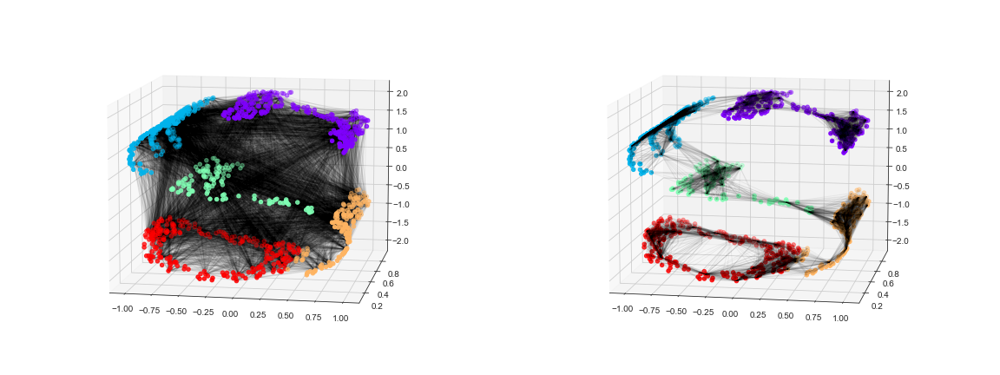

Bu sayfa orijinal kitap bölümünün eksiksiz Türkçe uyarlamasıdır — atlanan başlık/kod yoktur. Zor yerlerde ek ders notu ve 🧪 Şimdi deneyin kutuları vardır.
Orijinal (EN): 05.10 Manifold Learning · Jupyter notebook
5.10 Derinlemesine: Manifold Öğrenme
Orijinal: 05.10 Manifold Learning
Önceki bölümde PCA'nın boyut indirgeme için nasıl kullanıldığını gördük. PCA esnek ve hızlı olsa da veride doğrusal olmayan ilişkiler olduğunda iyi performans göstermez.
Bu eksikliği gidermek için manifold öğrenme algoritmalarına dönebiliriz — veri kümelerini yüksek boyutlu uzaylara gömülü düşük boyutlu manifoldlar olarak tanımlamaya çalışan denetimsiz tahmin ediciler.
Manifold düşünürken bir kağıt yaprağını hayal edin: üç boyutlu dünyamızda yaşayan iki boyutlu bir nesne. Kağıdı bükmek, kıvırmak veya buruşturmak onu hâlâ iki boyutlu bir manifold yapar; ancak üç boyutlu uzaya gömülüş artık doğrusal değildir.
Burada MDS, yerel doğrusal gömme (LLE) ve izometrik haritalama (Isomap) gibi yöntemleri inceleyeceğiz.
Standart içe aktarmalarla başlayalım:
%matplotlib inline
import matplotlib.pyplot as plt
plt.style.use('seaborn-whitegrid')
import numpy as npfetch_openml MNIST için ağ indirmesi gerektirir; Pyodide'da ilk çalıştırma uzun sürebilir. Isomap ve LLE büyük veride yavaştır — alt örnekleme kullanın.
Manifold Öğrenme: "HELLO"
def make_hello(N=1000, rseed=42):
# Make a plot with "HELLO" text; save as PNG
fig, ax = plt.subplots(figsize=(4, 1))
fig.subplots_adjust(left=0, right=1, bottom=0, top=1)
ax.axis('off')
ax.text(0.5, 0.4, 'HELLO', va='center', ha='center', weight='bold', size=85)
fig.savefig('hello.png')
plt.close(fig)
# Open this PNG and draw random points from it
from matplotlib.image import imread
data = imread('hello.png')[::-1, :, 0].T
rng = np.random.RandomState(rseed)
X = rng.rand(4 * N, 2)
i, j = (X * data.shape).astype(int).T
mask = (data[i, j] < 1)
X = X[mask]
X[:, 0] *= (data.shape[0] / data.shape[1])
X = X[:N]
return X[np.argsort(X[:, 0])]Kavramları netleştirmek için "HELLO" kelimesi şeklinde iki boyutlu veri üreten bir fonksiyonla başlayalım:
X = make_hello(1000)
colorize = dict(c=X[:, 0], cmap=plt.cm.get_cmap('rainbow', 5))
plt.scatter(X[:, 0], X[:, 1], **colorize)
plt.axis('equal');Çıktı iki boyutludur ve "HELLO" şeklinde noktalardan oluşur. Bu biçim, algoritmaların ne yaptığını görsel olarak anlamamıza yardımcı olur.
Çok Boyutlu Ölçekleme (MDS)
def rotate(X, angle):
theta = np.deg2rad(angle)
R = [[np.cos(theta), np.sin(theta)],
[-np.sin(theta), np.cos(theta)]]
return np.dot(X, R)
X2 = rotate(X, 20) + 5
plt.scatter(X2[:, 0], X2[:, 1], **colorize)
plt.axis('equal');Verinin x ve y değerleri en temel tanım olmayabilir; ölçekleme, döndürme veriyi değiştirse de "HELLO" yapısı kalır (aşağıdaki şekil).
from sklearn.metrics import pairwise_distances
D = pairwise_distances(X)
D.shapeBurada temel olan noktalar arasındaki uzaklıktır. $N$ nokta için $(i,j)$ girişi $i$ ile $j$ arasındaki uzaklığı içeren $N \times N$ bir uzaklık matrisi kurarız:
plt.imshow(D, zorder=2, cmap='viridis', interpolation='nearest')
plt.colorbar();$N$=1.000 nokta için 1000×1000 matris elde ederiz (aşağıdaki şekil). Döndürülmüş ve ötelenmiş veri için de aynı uzaklık matrisi oluşur.
D2 = pairwise_distances(X2)
np.allclose(D, D2)Uzaklık matrisi dönme ve ötelemeye karşı değişmezdir; ancak görselleştirme sezgisel değildir — "HELLO" yapısı kaybolur. MDS tam olarak uzaklık matrisinden $D$ boyutlu koordinat temsilini kurtarmaya çalışır:
from sklearn.manifold import MDS
model = MDS(n_components=2, dissimilarity='precomputed', random_state=1701)
out = model.fit_transform(D)
plt.scatter(out[:, 0], out[:, 1], **colorize)
plt.axis('equal');HELLO verisinde MDS:
import numpy as np
from sklearn.manifold import MDS
# make_hello fonksiyonu notebook'ta tanımlı; basit 2D örnek:
rng = np.random.RandomState(42)
X = rng.randn(50, 2)
emb = MDS(n_components=2, random_state=0).fit_transform(X)
print("Gömme şekli:", emb.shape)MDS algoritması, yalnızca $N\times N$ uzaklık matrisini kullanarak olası iki boyutlu koordinat gösterimlerinden birini kurtarır.
Manifold Öğrenme Olarak MDS
def random_projection(X, dimension=3, rseed=42):
assert dimension >= X.shape[1]
rng = np.random.RandomState(rseed)
C = rng.randn(dimension, dimension)
e, V = np.linalg.eigh(np.dot(C, C.T))
return np.dot(X, V[:X.shape[1]])
X3 = random_projection(X, 3)
X3.shapeUzaklık matrisleri herhangi bir boyuttaki veriden hesaplanabilir. Veriyi üç boyuta yansıtıp MDS ile iki boyutlu gömme isteyebiliriz (aşağıdaki şekil):
from mpl_toolkits import mplot3d
ax = plt.axes(projection='3d')
ax.scatter3D(X3[:, 0], X3[:, 1], X3[:, 2],
**colorize);Üç boyutlu veriyi girdi olarak verip MDS tahmin edicisi uzaklık matrisini hesaplayıp bu uzaklık matrisi için optimal iki boyutlu gömmeyi belirler (aşağıdaki şekil).
model = MDS(n_components=2, random_state=1701)
out3 = model.fit_transform(X3)
plt.scatter(out3[:, 0], out3[:, 1], **colorize)
plt.axis('equal');Bu, manifold öğrenme tahmin edicisinin hedefinin özüdür: yüksek boyutlu gömülü veri verildiğinde, veri içindeki belirli ilişkileri koruyan düşük boyutlu bir temsil aranır. MDS durumunda korunan nicelik her nokta çifti arasındaki uzaklıktır.
Doğrusal Olmayan Gömme: MDS'in Başarısız Olduğu Yer
def make_hello_s_curve(X):
t = (X[:, 0] - 2) * 0.75 * np.pi
x = np.sin(t)
y = X[:, 1]
z = np.sign(t) * (np.cos(t) - 1)
return np.vstack((x, y, z)).T
XS = make_hello_s_curve(X)Veri üç boyutlu olsa da gömme daha karmaşıktır (aşağıdaki şekil). Veri "S" şeklinde bükülmüştür.
from mpl_toolkits import mplot3d
ax = plt.axes(projection='3d')
ax.scatter3D(XS[:, 0], XS[:, 1], XS[:, 2],
**colorize);Temel ilişkiler hâlâ vardır; ancak veri doğrusal olmayan biçimde dönüştürülmüştür.
from sklearn.manifold import MDS
model = MDS(n_components=2, random_state=2)
outS = model.fit_transform(XS)
plt.scatter(outS[:, 0], outS[:, 1], **colorize)
plt.axis('equal');Basit MDS bu doğrusal olmayan gömülüşü "açamaz"; en iyi iki boyutlu doğrusal gömme orijinal $y$ eksenini atar (aşağıdaki şekil).
Doğrusal Olmayan Manifoldlar: Yerel Doğrusal Gömme

Solda MDS her nokta çifti arasındaki uzaklığı korumaya çalışır. Sağda yerel doğrusal gömme (LLE) yalnızca komşu noktalar arasındaki uzaklıkları korumaya çalışır. LLE, bu mantığı yansıtan bir maliyet fonksiyonunun küresel optimizasyonuyla veriyi açabilir (aşağıdaki şekil).
from sklearn.manifold import LocallyLinearEmbedding
model = LocallyLinearEmbedding(
n_neighbors=100, n_components=2,
method='modified', eigen_solver='dense')
out = model.fit_transform(XS)
fig, ax = plt.subplots()
ax.scatter(out[:, 0], out[:, 1], **colorize)
ax.set_ylim(0.15, -0.15);S-eğrisi verisinde LLE (sentetik veri gerektirir):
from sklearn.manifold import LocallyLinearEmbedding
from sklearn.datasets import make_s_curve
X, _ = make_s_curve(200, random_state=0)
emb = LocallyLinearEmbedding(n_components=2, n_neighbors=15).fit_transform(X)
print("LLE gömme şekli:", emb.shape)Sonuç orijinal manifolda göre biraz bozuk kalsa da verideki temel ilişkileri yakalar!
Manifold Yöntemleri Hakkında Düşünceler
Pratikte manifold teknikleri genelde yüksek boyutlu verinin basit nitel görselleştirmesinden öteye nadiren kullanılır.
Manifold öğrenmenin PCA'ya kıyasla zorlukları:
- Eksik veri için iyi bir çerçeve yoktur; PCA'da yinelemeli yaklaşımlar vardır.
- Gürültü manifoldu "kısa devre" edebilir; PCA gürültüyü filtreler.
- Komşu sayısı seçimi kritiktir ve genelde optimal seçim için sağlam bir ölçüt yoktur.
- Çıktı boyutu küresel olarak optimal belirlenmesi zordur.
- Gömülü boyutların anlamı her zaman net değildir.
- Hesaplama maliyeti genelde $O[N^2]$ veya $O[N^3]$ ölçeklenir.
Manifold yöntemlerinin PCA'ya tek net üstünlüğü doğrusal olmayan ilişkileri korumasıdır; bu yüzden veriyi önce PCA ile keşfederim.
Scikit-Learn LLE ve Isomap dışında birçok manifold yöntemi sunar. Öneriler: oyuncak S-eğrisi için modified LLE; gerçek yüksek boyutlu veride Isomap; güçlü kümeleme için t-SNE (yavaş olabilir).
Örnek: Yüzlerde Isomap
from sklearn.datasets import fetch_lfw_people
faces = fetch_lfw_people(min_faces_per_person=30)
faces.data.shape2.370 görüntü, her biri 2.914 piksel — görüntüler 2.914 boyutlu uzayda noktalar gibidir! Birkaç görüntüyü gösterelim (aşağıdaki şekil):
fig, ax = plt.subplots(4, 8, subplot_kw=dict(xticks=[], yticks=[]))
for i, axi in enumerate(ax.flat):
axi.imshow(faces.images[i], cmap='gray')5.9 PCA bölümünde sıkıştırma amacıyla bileşenleri kullanmıştık. Burada düşük boyutlu gömme ile görüntüler arası ilişkileri öğrenmek istiyoruz:
from sklearn.decomposition import PCA
model = PCA(100, svd_solver='randomized').fit(faces.data)
plt.plot(np.cumsum(model.explained_variance_ratio_))
plt.xlabel('n components')
plt.ylabel('cumulative variance');Bu veri için %90 varyansı korumak yaklaşık 100 bileşen gerektirir — veri içsel olarak çok yüksek boyutludur. Bu durumda LLE ve Isomap yardımcı olabilir.
from sklearn.manifold import Isomap
model = Isomap(n_components=2)
proj = model.fit_transform(faces.data)
proj.shapeÇıktı, tüm girdi görüntülerinin iki boyutlu yansımasıdır. Küçük resimlerle görselleştirmek için bir fonksiyon tanımlayabiliriz:
from matplotlib import offsetbox
def plot_components(data, model, images=None, ax=None,
thumb_frac=0.05, cmap='gray'):
ax = ax or plt.gca()
proj = model.fit_transform(data)
ax.plot(proj[:, 0], proj[:, 1], '.k')
if images is not None:
min_dist_2 = (thumb_frac * max(proj.max(0) - proj.min(0))) ** 2
shown_images = np.array([2 * proj.max(0)])
for i in range(data.shape[0]):
dist = np.sum((proj[i] - shown_images) ** 2, 1)
if np.min(dist) < min_dist_2:
# don't show points that are too close
continue
shown_images = np.vstack([shown_images, proj[i]])
imagebox = offsetbox.AnnotationBbox(
offsetbox.OffsetImage(images[i], cmap=cmap),
proj[i])
ax.add_artist(imagebox)Bu fonksiyonu çağırdığımızda sonuç aşağıdaki şekildedir:
fig, ax = plt.subplots(figsize=(10, 10))
plot_components(faces.data,
model=Isomap(n_components=2),
images=faces.images[:, ::2, ::2])İlk iki Isomap boyutu genel parlaklık ve yüz yönelimini betimler gibi görünür.
Örnek: Rakamlarda Yapıyı Görselleştirme
from sklearn.datasets import fetch_openml
mnist = fetch_openml('mnist_784')
mnist.data.shapeMNIST veri kümesi 70.000 görüntü, her biri 784 piksel (28×28). İlk birkaç görüntüye bakalım (aşağıdaki şekil):
mnist_data = np.asarray(mnist.data)
mnist_target = np.asarray(mnist.target, dtype=int)
fig, ax = plt.subplots(6, 8, subplot_kw=dict(xticks=[], yticks=[]))
for i, axi in enumerate(ax.flat):
axi.imshow(mnist_data[1250 * i].reshape(28, 28), cmap='gray_r')El yazısı stillerinin çeşitliliğine dair fikir verir. Hız için verinin 1/30'unu kullanarak manifold projeksiyonu hesaplayalım (aşağıdaki şekil):
# Use only 1/30 of the data: full dataset takes a long time!
data = mnist_data[::30]
target = mnist_target[::30]
model = Isomap(n_components=2)
proj = model.fit_transform(data)
plt.scatter(proj[:, 0], proj[:, 1], c=target, cmap=plt.cm.get_cmap('jet', 10))
plt.colorbar(ticks=range(10))
plt.clim(-0.5, 9.5);Tek bir rakamı (örneğin 1) vurgulayarak projeksiyonda biçim çeşitliliğini görebiliriz (aşağıdaki şekil):
# Choose 1/4 of the "1" digits to project
data = mnist_data[mnist_target == 1][::4]
fig, ax = plt.subplots(figsize=(10, 10))
model = Isomap(n_neighbors=5, n_components=2, eigen_solver='dense')
plot_components(data, model, images=data.reshape((-1, 28, 28)),
ax=ax, thumb_frac=0.05, cmap='gray_r')1 rakamının veri kümesindeki biçim çeşitliliğine dair fikir verir. Projeksiyon, sınıflandırma için doğrudan yararlı olmasa da veriyi anlamaya ve ön işleme fikirlerine yardımcı olabilir.